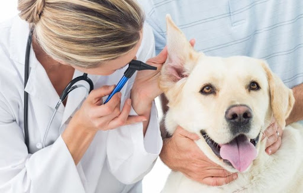

Резюме
Ф.И.О Шилов Никита Сергеевич
Дата рождения:02.09.2004
E-mail: shilovnikita14@gmail.com
Место учебы: Запорізька Загальноосвітня Школа I-III Ступенів № 103
Класс: 11-Б
Автобиография
Я, Шилов Никита Сергеевич, родился 02.09.2004, учусь в 11 классе.
Мои любимые предметы в школе- география, биология , химия, история.
Предметы, которые нужны мне для овладения профессией- химия, биология.
Олимпиады
За все время, которое я учусь, я принимал участие в олимпиадах два раза, а именно по географии и по математике. Все они проходили в шестом классе. На них я занял по третьему месту.
Также, я принимал участие в спортивных мероприятиях, а именно в турнире по теннису, где я занял второе место.
Мое хобби
Я увлекаюсь большим теннисом, баскетболом.Также, наверное, основное мое хобби- компьютерные игры.
Моя будущая профессия
В будущем я бы хотел связать свою жизнь с ветеринарной медициной.
Во-первых, я считаю, что в будущем, как и в наше время, ветеринарный врач будет очень восстребованой профессией.
Во-вторых, почему я выбрал именно эту профессию, так как я попросту хочу помогать животным, ведь они не могут сами о себе позаботится, как, например, люди.